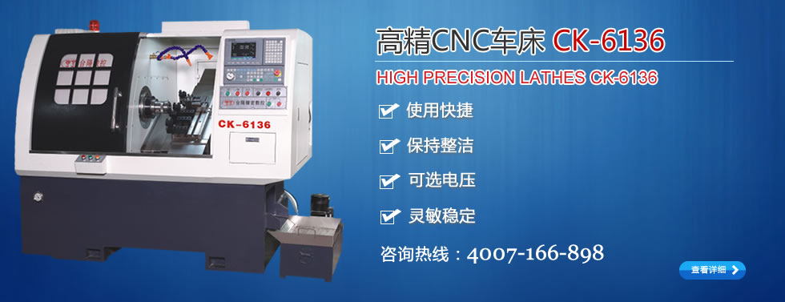
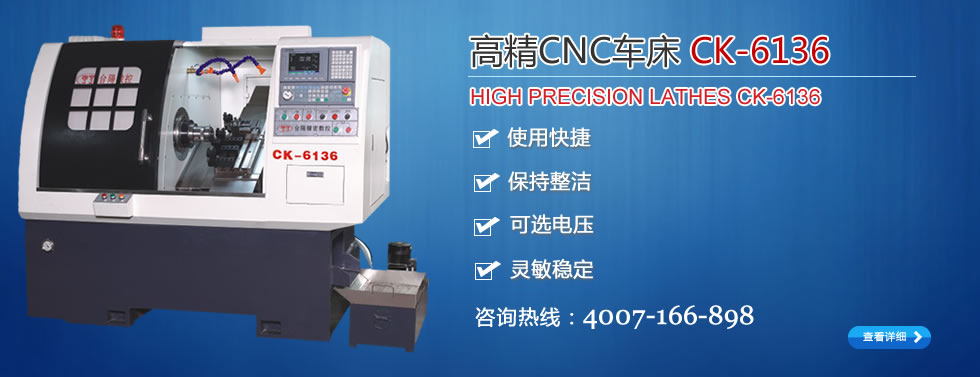

台湾台阳精密机械有限公司
东莞总公司：东莞市虎门镇怀德雅瑶工业区
台湾公司：23866新北市树林区俊兴街211巷7弄31号
联系人：陈先生
手 机：13829260275
联系人：肖先生
手 机：13825772521
Q Q ：1028423133
微信号：xh565678
| 公司: | |
| 姓名: | |
| 手机: | |
| 地址: |
|
机床数控技术的现状及未来发展趋势
目录：企业新闻点击率： 发布时间：2012-03-29 21:20:21
发布时间：2012-03-29 21:20:21

一、数控机床的简单介绍
车、铣、刨、磨、镗、钻、电火花、剪板、折弯、激光切割等都是机械加工方法，所谓机械加工，就是把金属毛坯零件加工成所需要的形状，包含尺寸精度和几何精度两个方面。能完成以上功能的设备都称为机床，数控机床就是在普通机床上发展过来的，数控的意思就是数字控制。数控系统是由显示器、控制器伺服、伺服电机、和各种开关、传感器构成。当然，普通机床发展到数控机床不只是加装数控系统这么简单，例如：从铣床发展到加工中心，机床结构发生变化，最主要的是加了刀库，大幅度提高了精度。加工中心最主要的功能是铣、镗、钻的功能。我们一般所说的数控设备，主要是指数控车床和加工中心。
1、数控机床的特点如下：
（1）加工精度高，具有稳定的加工质量；
（2）可进行多坐标的联动，能加工形状复杂的零件；
（3）加工零件改变时，一般只需要更改数控程序，可节省生产准备时间机床本身的精度高、刚性大,可选择有利的加工用量，生产率高（一般为普通机床的3~5倍）；
（4）机床自动化程度高，可以减轻劳动强度；
（5）对操作人员的素质要求较高，对维修人员的技术要求更高。
2、数控机床的组成部分主机，他是数控机床的主题，包括机床身、立柱、主轴、进给机构等机械部件。他是用于完成各种切削加工的机械部件。数控装置，是数控机床的核心，包括硬件（印刷电路板、CRT显示器、键盒、纸带阅读机等）以及相应的软件，用于输入数字化的零件程序，并完成输入信息的存储、数据的变换、插补运算以及实现各种控制功能。驱动装置，他是数控机床执行机构的驱动部件，包括主轴驱动单元、进给单元、主轴电机及进给电机等。他在数控装置的控制下通过电气或电液伺服系统实现主轴和进给驱动。当几个进给联动时，可以完成定位、直线、平面曲线和空间曲线的加工。辅助装置，指数控机床的一些必要的配套部件，用以保证数控机床的运行，如冷却、排屑、润滑、照明、监测等。它包括液压和气动装置、排屑装置、交换工作台、数控转台和数控分度头，还包括刀具及监控检测装置等。编程及其他附属设备，可用来在机外进行零件的程序编制、存储等。数控技术，简称“数控”。英文：NumericalControl（NC）。是指用数字、文字和符号组成的数字指令来实现一台或多台机械设备动作控制的技术。
二、国内外机床数控技术的现状
1、国内数控机床技术现状我国数控机床制造业在80年代曾有过高速发展的阶段，许多机床厂从传统产品实现向数控化产品的转型。但总的来说，技术水平不高，质量不佳，所以在90年代初期面临国家经济由计划性经济向市场经济转移调整，经历了几年最困难的萧条时期，那时生产能力降到50%，库存超过4个月。
从1995年“九五”以后国家从扩大内需启动机床市场，加强限制进口数控设备的审批，投资重点支持关键数控系统、设备、技术攻关，对数控设备生产起到了很大的促进作用，尤其是在1999年以后，国家向国防工业及关键民用工业部门投入大量技改资金，使数控设备制造市场一派繁荣。从2000年8月份的上海数控机床展览会和2001年4月北京国际机床展览会上，也可以看到多品种产品的繁荣景象。但也反映了下列问题：
（1）低技术水平的产品竞争激烈，互相靠压价促销；
（2）高技术水平、全功能产品主要靠进口；
（3）配套的高质量功能部件、数控系统附件主要靠进口；
（4）应用技术水平较低，联网技术没有完全推广使用；
（5）自行开发能力较差，相对有较高技术水平的产品主要靠引进图纸、合资生产或进口件组装。
2、国外数控机床技术现状当前，在数控机床精密化方面，美国的水平最高，不仅生产中小型精密机床，而且由于国防和尖端技术的需要，研究开发了大型精密机床。其代表产品有LLL实验室研制成功的DTM一3型精密车床和LODTM大型光学金刚石车床，它们是世界公认水平最高的、达到当前技术最前沿的大型精密机床。其它国家也相应研制成功各种类似的装备，如英国的Cran·field、日本的东芝机械等。
（1）高速高精与多轴加工成为数控机床的主流，纳米控制已经成为高速高精加工的潮流。
（2）多任务和多轴加工数控机床越来越多地应用到能源、航空航天等行业。
（3）机床与机器人的集成应用日趋普及，且结构形式多样化，应用范围扩大化，运动速度高速化，多传感器融合技术实用化，控制功能智能化，多机器人协同普及化。
（4）智能化加工与监测功能不断扩充，车间的加工监测与管理可实时获取机床本身的状态信息，分析相关数据，预测机床的状态，提前进行相关的维护，避免事故的发生，减少机床的故障率，提高机床的利用率。
（5）最新的机床误差检测与补偿技术能够在较短的时间内完成对机床的补偿测量，与传统的激光干涉仪相比，对机床误差的补偿精度能够提高3～4倍，同时效率得到大幅度提升。
（6）最新的CAD/CAM技术为多轴多任务数控机床的加工提供了强有力的支持，可以大幅度提高加工效率。
（7）刀具技术发展迅速，众多刀具的设计涵盖了整个加工过程，并且新型刀具能够满足平稳加工以及抗振性能的要求。三、数控机床技术发展的趋势
1、高速度与超精度化速度和精度是数控机床的两个重要指标，它直接关系到加工效率和产品的质量。高速度、超精度加工技术可极大地提高效率，提高产品的质量和档次，缩短生产周期和提高市场竞争能力。为此日本先端技术研究会将其列为5大现代制造技术之一，国际生产工程学会（CIRP）将其确定为21世纪的中心研究方向之一。特别是在超高速切削、超精密加工技术的实施中，对机床各坐标轴位移速度和定位精度提出了更高的要求；另外，这两项技术指标又是相互制约的，也就是说要求位移速度越高，定位精度就越难提高。目前，在超高速加工中，车削和铣削的切削速度已达到5000～8000m/min以上；主轴转数在30000转/分（有的高达10万转/分）以上；工作台的移动速度（进给速度）：在分辨率为l微米时，在100m/min（有的到200m/min）以上，在分辨率为0.1um时，在24m/min以上；自动换刀速度在1秒以内；小线段插补进给速度达到12m/min。在加工精度方面，近10年来，普通级数控机床的加工精度已由10um提高到5um，精密级加工中心则从3～5um，提高到1～1．5um,并且超精密加工精度已开始进入纳米级（0．01um）。
2、高可靠性随着数控机床网络化应用的发展，数控机床的高可靠性已经成为数控系统制造商和数控机床制造商追求的目标。对于每天工作两班的无人工厂而言，如果要求在l6小时内连续正常工作，无故障率在P（t）>99％以上，则数控机床的平均无故障运行时间MTBF就必须大于3000小时。我们只对一台数控机床而言，如主机与数控系统的失效率之比为l0：1（数控的可靠比主机高一个数量级）。此时数控系统的MTBF就要大于33333．3小时，而其中的数控装置、主轴及驱动等的MTBF就必须大于l0万小时。当前国外数控装置的MTBF值已达6000小时以上，驱动装置达30000小时以上，但是，可以看到距理想的目标还有差距。
3、多功能化在零件加工过程中有大量的无用时间消耗在工件搬运、上下料、安装调整、换刀和主轴的升、降速上，为了尽可能降低这些无用时间，人们希望将不同的加工功能整合在同一台机床上，因此数控机床实现了一机多能，以最大限度地提高设备利用率。另外前台加工、后台编辑的前后台功能，充分提高其工作效率和机床利用率。数控机床还具有更高的通讯功能，现代数控机床除具有通信口，DNC功能外，还具有网络功能。
4、多轴化随着5轴联动数控系统和编程软件的普及，5轴联动控制的加工中心和数控铣床已经成为当前的一个开发热点，由于在加工自由曲面时，5轴联动控制对球头铣刀的数控编程比较简单，并且能使球头铣刀在铣削3维曲面的过程中始终保持合理的切速，从而显着改善加工表面的粗糙度和大幅度提高加工效率，而在3轴联动控制的机床无法避免切速接近于零的球头铣刀端部参与切削，因此，5轴联动机床以其无可替代的性能优势已经成为各大机床厂家积极开发和竞争的焦点。
5、网络化数控机床的网络化，主要指机床通过所配装的数控系统与外部的其它控制系统或上位计算机进行网络连接和网络控制。数控机床一般首先面向生产现场和企业内部的局域网，然后再经由因特网通向企业外部，这就是所谓Internet/Intranet技术。随着网络技术的成熟和发展，最近业界又提出了数字制造的概念。数字制造，是机械制造企业现代化的标志之一，也是国际先进机床制造商当今标准配置的供货方式。随着信息化技术的大量采用，越来越多的国内用户在进口数控机床时要求具有远程通讯服务等功能。机械制造企业在普遍采用CAD/CAM的基础上，越加广泛地使用数控加工设备。数控应用软件日趋丰富和具有“人性化”。虚拟设计、虚拟制造等高端技术也越来越多地为工程技术人员所追求。通过软件智能替代复杂的硬件，正在成为当代机床发展的重要趋势。在数字制造的目标下，通过流程再造和信息化改造，ERP等一批先进企业管理软件已经脱颖而出，为企业创造出更高的经济效益。
6、柔性化、智能化数控机床向柔性自动化系统发展的趋势是：从点（数控单机、加工中心和数控复合加工机床）、线（FMC、FMS、FTL、FML）向面（工段车间独立制造岛、FA）、体（CIMS、分布式网络集成制造系统）的方向发展，另一方面向注重应用性和经济性方向发展。柔性自动化技术是制造业适应动态市场需求及产品迅速更新的主要手段，是各国制造业发展的主流趋势，是先进制造领域的基础技术。其重点是以提高系统的可靠性、实用化为前提，以易于联网和集成为目标；注重加强单元技术的开拓、完善；CNC单机向高精度、高速度和高柔性方向发展；数控机床及其构成柔性制造系统能方便地与CAD、CAM、CAPP、MTS联结，向信息集成方向发展；网络系统向开放、集成和智能化方向发展。智能化是21世纪制造技术发展的一个大方向。智能加工是一种基于神经网络控制、模糊控制、数字化网络技术和理论的加工，它是要在加工过程中模拟人类专家的智能活动，以解决加工过程许多不确定性的、要由人工干预才能解决的问题。智能化的内容包括在数控系统中的各个方面：为追求加工效率和加工质量的智能化，如自适应控制，工艺参数自动生成；为提高驱动性能及使用连接方便的智能化，如前馈控制、电机参数的自适应运算、自动识别负载自动选定模型、自整定等；简化编程、简化操作的智能化，如智能化的自动编程，智能化的人机界面等；智能诊断、智能监控，方便系统的诊断及维修等。世界上正在进行研究的智能化切削加工系统很多，其中日本智能化数控装置研究会针对钻削的智能加工方案具有代表性。
7、绿色化21世纪的金切机床必须把环保和节能放在重要位置，即要实现切削加工工艺的绿色化。目前这一绿色加工工艺主要集中在不使用切削液上，这主要是因为切削液既污染环境和危害工人健康，又增加资源和能源的消耗。干切削一般是在大气氛围中进行，但也包括在特殊气体氛围中（氮气中、冷风中或采用干式静电冷却技术）不使用切削液进行的切削。不过，对于某些加工方式和工件组合，完全不使用切削液的干切削目前尚难与实际应用，故又出现了使用极微量润滑（MQL）的准干切削。对于面向多种加工方法/工件组合的加工中心之类的机床来说，主要是采用准干切削，通常是让极微量的切削油与压缩空气的混合物经由机床主轴与工具内的中空通道喷向切削区。在各类金切机床中，采用干切削最多的是滚齿机。
8、体系开放化向未来技术开放：由于软硬件接口都遵循公认的标准协议，只需少量的重新设计和调整，新一代的通用软硬件资源就可能被现有系统所采纳、吸收和兼容，这就意味着系统的开发费用将大大降低而系统性能与可靠性将不断改善并处于长生命周期；
向用户特殊要求开放：更新产品、扩充功能、提供硬软件产品的各种组合以满足特殊应用要求；数控标准的建立：国际上正在研究和制定一种新的CNC系统标准ISO14649（STEP-NC）以提供一种不依赖于具体系统的中性机制，能够描述产品整个生命，周期内的统一数据模型，从而实现整个制造过程乃至各个工业领域产品信息的标准化。标准化的编程语言，既方便用户使用，又降低了和操作效率直接有关的劳动消耗。
9、极端化（大型化和微型化）国防、航空、航天事业的发展和能源等基础产业装备的大型化需要大型且性能良好的数控机床的支撑。而超精密加工技术和微纳米技术是21世纪的战略技术，需发展能适应微小型尺寸和微纳米加工精度的新型制造工艺和装备，所以微型机床包括微切削加工（车、铣、磨）机床、微电加工机床、微激光加工机床和微型压力机等的需求量正在逐渐增大。
下一篇：关于国产数控车床的发展方向